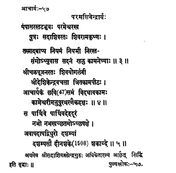

57. आचार्य - 57 - परमशिवेन्द्रार्यः
पम्पासर ••• कामनेत्र्याः ॥ ११२ ॥
श्रीचक्र ••• चरणैकदक्षः ॥ ११३ ॥
स पार्थिवे ••• शकाब्दे ॥ ११४ ॥
अयमेव ••• वृद्धाः ॥
Śivarāmakṛṣṇa, son of Parameśvara on the banks of river Pampā, devoted to Sadāśiva, having got initiation into asceticism from him, devoid of any attachment indeed, he remained at the abode of goddess Kāmākṣī.
Devoted to the worship of Śrī Cakrarāja, adhered to the path of Śivarāja, adhered to the path of Śivayoga, adept in worshipping the goddess Kāmeśvarī, he, free from desires, held the preceptor-ship for forty-seven years.
This senior preceptor, courageous, reached the space that is beyond the physical body, on the tenth day of the bright fortnight of the Śravaṇa month in the year Pārthiva of the Śaka era 1508 (Dūra Śaka).
According to scholars, this preceptor was the master of Sadāśivabrahmendra and attained siddhi in Śvetāraṇyam.
